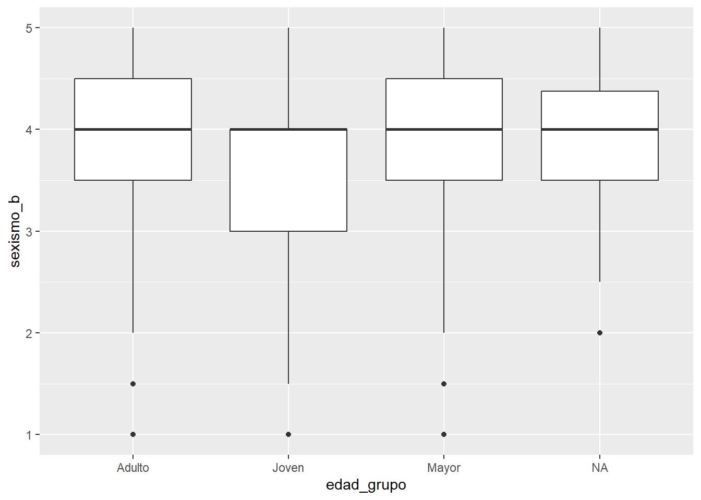
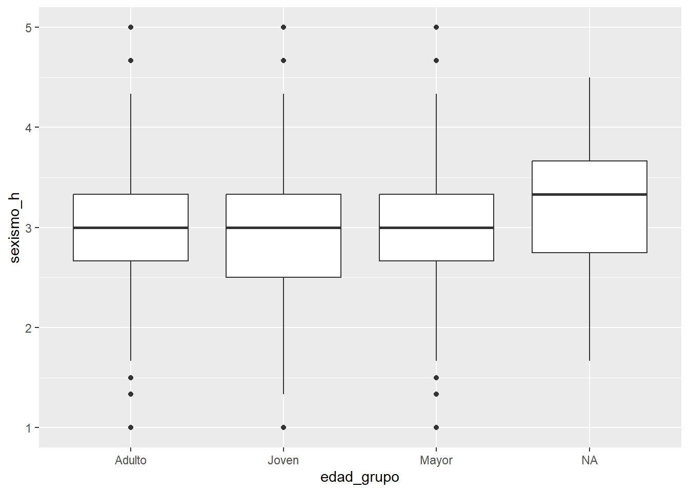

Sexismo benevolente y legitimación de la desigualdad
Introducción
La presente investigación analiza el fenómeno del sexismo en la vida social, poniendo especial atención en sus formas menos evidentes, cotidianas y socialmente aceptadas. Desde esta perspectiva, resulta relevante considerar que no todas estas expresiones se manifiestan de manera explícita o conflictiva; por el contrario, muchas operan a través de prácticas, discursos y normas culturales que contribuyen a la naturalización y legitimación de las diferencias entre hombres y mujeres. En este marco, se considera el sexismo como un fenómeno multidimensional que incluye tanto formas hostiles como benevolentes, las cuales, aunque distintas en su expresión, contribuyen a la reproducción de desigualdades de género.
Para abordar esta temática, resulta necesario delimitar conceptualmente el sexismo y sus alcances. En este sentido, el sexismo se entiende como un conjunto de actitudes, creencias y prácticas que establecen y justifican la desigualdad entre hombres y mujeres, sustentadas en la atribución de características diferenciadas según el género y en la legitimación de jerarquías sociales basadas en dichas diferencias (Glick & Fiske, 1996; Pratto et al., 1994). Asimismo, puede comprenderse como un fenómeno de carácter ambivalente, en tanto integra dos dimensiones: el sexismo hostil, que se expresa mediante actitudes abiertamente negativas hacia las mujeres, y el sexismo benevolente, que consiste en evaluaciones subjetivamente positivas que, sin embargo, refuerzan su subordinación a través de la asignación de roles tradicionales. Ambas dimensiones serán consideradas en el análisis, en tanto permiten captar distintas formas de expresión del prejuicio de género. Por su parte, el prejuicio se entiende como una disposición actitudinal negativa hacia grupos sociales, vinculada a la mantención de jerarquías y desigualdades entre grupos (Pratto et al., 1994; Ho et al., 2012).
A su vez, estas formas de desigualdad pueden ser comprendidas en el marco de la teoría de la dominancia social, la cual plantea que las sociedades humanas tienden a organizarse en sistemas jerárquicos basados en grupos, en los que ciertos grupos mantienen posiciones de poder y privilegio sobre otros, sustentados por ideologías y prácticas que legitiman y reproducen dichas desigualdades (Sidanius & Pratto, 1999).
Desde esta perspectiva, tanto la teoría del sexismo ambivalente como la teoría de la dominancia social permiten comprender cómo distintas formas de prejuicio de género, tanto de carácter hostil como benevolente, pueden contribuir a la legitimación de jerarquías de género. Sin embargo, en contextos donde se promueven ideales de igualdad, la persistencia de estas prácticas plantea una posible tensión entre principios normativos y formas cotidianas de interacción social.
A nivel individual, estas dinámicas estructurales se expresan a través de actitudes y percepciones que contribuyen a la reproducción simbólica de dichas jerarquías, manifestándose en orientaciones como el sexismo y las creencias asociadas a la legitimación de la desigualdad social.
En función de lo anterior, la investigación se orienta a responder la siguiente pregunta:
¿En qué medida las distintas formas de sexismo (benevolente y hostil) se asocian con las orientaciones hacia la dominación social y la legitimación de la desigualdad?
Centrar el análisis en el sexismo como fenómeno multidimensional responde a su capacidad de operar tanto de forma explícita como sutil en la reproducción de desigualdades de género. Mientras el sexismo hostil se manifiesta mediante actitudes abiertamente negativas, el sexismo benevolente se expresa a través de evaluaciones aparentemente positivas que refuerzan roles tradicionales y relaciones de dependencia. En este sentido, ambas dimensiones permiten captar distintas formas en que las jerarquías de género se sostienen en la vida social.
A su vez, estas actitudes pueden ser comprendidas en relación con orientaciones más amplias hacia la dominación social, particularmente a través del concepto de orientación a la dominancia social (SDO), entendido como la tendencia individual a preferir y legitimar relaciones jerárquicas entre grupos (Pratto et al., 1994). Desde esta perspectiva, el sexismo puede interpretarse como una expresión específica de dichas orientaciones, en la medida en que contribuye a la mantención de desigualdades estructurales entre hombres y mujeres.
A partir de ello, se establece como primera línea de análisis la comparación de los niveles de sexismo, tanto benevolente como hostil, según género y edad, con el objetivo de identificar posibles patrones diferenciales en su distribución. Se plantea la siguiente hipótesis:
H1: Los niveles de sexismo, tanto benevolente como hostil, tenderán a ser más elevados en hombres y en personas de mayor edad.
En segundo lugar, resulta pertinente analizar la relación entre el sexismo y las orientaciones hacia la legitimación de la desigualdad, en tanto estas permiten evaluar cómo los individuos interpretan y justifican las jerarquías presentes en la estructura social. En esta investigación, se consideran tres dimensiones analíticas: la dominación grupal, que agrupa actitudes favorables a la jerarquía entre grupos; la meritocracia, que atribuye las diferencias sociales a factores individuales como el esfuerzo y las habilidades; y la oposición a la igualdad, entendida como el rechazo a la igualdad de oportunidades entre grupos. En este marco, se formula la siguiente hipótesis:
H2: El sexismo, tanto benevolente como hostil, se asociará positivamente con la dominación grupal y las creencias meritocráticas, y negativamente con el igualitarismo.
El objetivo general de esta investigación es analizar la relación entre el sexismo, en sus dimensiones benevolente y hostil, y las orientaciones hacia la legitimación de la desigualdad social, así como su variación según características sociodemográficas.
Metodología
El presente estudio utiliza datos de la cuarta ola del Estudio Longitudinal Social de Chile (ELSOC 2019), desarrollado por el Centro de Estudios de Conflicto y Cohesión Social (COES). La población objetivo corresponde a hombres y mujeres entre 18 y 75 años residentes en zonas urbanas del país, y la muestra fue seleccionada mediante un diseño probabilístico, estratificado y multietápico. El tamaño muestral final corresponde aproximadamente a N = 2900 individuos.
Operacionalización de las variables
Para capturar los constructos latentes, se construyeron índices a partir del promedio de ítems (“rowMeans”), previa recodificación de valores perdidos y respuestas no sustantivas. En particular, las categorías “No sabe” y “No responde”, codificadas como -888 y -999 respectivamente en la base de datos, fueron transformadas en valores perdidos (NA) antes de cualquier cálculo, con el fin de evitar sesgos en la estimación.
Asimismo, para asegurar la correcta dirección de las escalas, se procedió a invertir aquellos ítems redactados en sentido igualitario mediante la fórmula (puntuación máxima + 1) - x, garantizando que valores más altos representen consistentemente una mayor presencia del constructo medido. La consistencia interna de cada escala fue evaluada mediante el coeficiente Alfa de Cronbach.
Sexismo benevolente (VD1): Se construyó a partir de la batería G01 (ítems g01_1 y g01_2, escala Likert 1–5: 1 = Totalmente en desacuerdo, 5 = Totalmente de acuerdo), que evalúa creencias que idealizan y refuerzan roles tradicionales de género desde una perspectiva aparentemente positiva. Los ítems se mantuvieron en su dirección original, de modo que valores más altos indican mayor nivel de sexismo benevolente. El índice fue calculado como el promedio de los ítems.
Sexismo hostil (VD2): Se construyó a partir de la batería G01 (ítems g01_3, g01_4 y g01_5, escala Likert 1–5), que evalúa actitudes abiertamente negativas y conflictivas hacia las mujeres. Los ítems se mantuvieron en su dirección original, de modo que valores más altos indican mayor nivel de sexismo hostil. El índice fue calculado como el promedio de los ítems.
Dominación grupal (Predictor 1): Se construyó a partir de la batería C18 (ítems c18_01 y c18_12, escala Likert 1–5: 1 = Totalmente en desacuerdo, 5 = Totalmente de acuerdo), que evalúa actitudes favorables a la jerarquía entre grupos. Los ítems se mantuvieron en su dirección original, de modo que valores más altos indican mayor nivel de legitimación de la desigualdad. El índice fue calculado como el promedio de los ítems.
Oposición a la igualdad (Predictor 2): Se construyó a partir de la batería C18 (ítems c18_02 y c18_03, escala Likert 1–5), que evalúa el apoyo a la igualdad de oportunidades entre grupos. Ambos ítems fueron invertidos para asegurar consistencia direccional, de modo que valores más altos en el índice reflejan una mayor oposición a la igualdad y una mayor orientación hacia la desigualdad. El índice fue calculado como el promedio de los ítems.
Meritocracia (Predictor 3): Se construyó a partir de la batería C18 (ítems c18_09 y c18_10, escala Likert 1–5), que evalúa la atribución del éxito a factores individuales como el esfuerzo y las habilidades. El ítem c18_13 (“En Chile las personas tienen igualdad de oportunidades para salir adelante”) fue excluido del índice debido a su correlación negativa con el resto de la escala, evidenciada mediante el coeficiente Alfa de Cronbach. Los ítems restantes se mantuvieron en su dirección original, de modo que valores más altos indican mayor adhesión a creencias meritocráticas. El índice fue calculado como el promedio de los ítems.
Tabla explicativa de variables seleccionadas
Variable
Ítems utilizados
Sexismo benevolente (VD1)
g01_1, g01_2
Sexismo hostil (VD2)
g01_3, g01_4, g01_5
Dominación grupal
c18_01, c18_12
Oposición a la igualdad
c18_02, c18_03 (invertidos)
Meritocracia
c18_09, c18_10
# librerias, leer base y elegir variables #library(tidyverse)
── Attaching core tidyverse packages ──────────────────────── tidyverse 2.0.0 ──
✔ dplyr 1.1.4 ✔ readr 2.1.5
✔ forcats 1.0.0 ✔ stringr 1.5.1
✔ ggplot2 4.0.1 ✔ tibble 3.2.1
✔ lubridate 1.9.4 ✔ tidyr 1.3.1
✔ purrr 1.0.4
── Conflicts ────────────────────────────────────────── tidyverse_conflicts() ──
✖ dplyr::filter() masks stats::filter()
✖ dplyr::lag() masks stats::lag()
ℹ Use the conflicted package (<http://conflicted.r-lib.org/>) to force all conflicts to become errors
library(psych)
Adjuntando el paquete: 'psych'
The following objects are masked from 'package:ggplot2':
%+%, alpha
Primeramente, comenzaremos analizando el alpha de cronbach de todas nuestros indices construidos, para saber que tan bien estan relacionados entre si los item de una escala, y si realmente estan midiendo lo mismo:
# revision de datos con alfa de cronbach #library(psych)alpha_sexismo_b <- psych::alpha(varelsoc19 %>%select(g01_01, g01_02)) #sexismo benevolentealpha_sexismo_b$total
raw_alpha std.alpha G6(smc) average_r S/N ase mean sd
0.5204052 0.5293674 0.359959 0.359959 1.1248 0.01601793 3.881148 0.7523017
median_r
0.359959
raw_alpha std.alpha G6(smc) average_r S/N ase mean sd
0.5301443 0.53638 0.4613074 0.2783151 1.156939 0.01408046 3.025923 0.7100954
median_r
0.2102199
# Las subescalas de sexismo benevolente (α = .52) y hostil (α = .53) presentaron una consistencia interna moderada, lo que puede atribuirse al reducido número de ítems y a la heterogeneidad conceptual de las afirmaciones incluidas.alpha_sdod <- psych::alpha(varelsoc19 %>%select(c18_01, c18_12)) # SDO-Dalpha_sdod$total
raw_alpha std.alpha G6(smc) average_r S/N ase mean sd
0.6084498 0.6105598 0.4394286 0.4394286 1.567788 0.01330399 2.590347 0.9263842
median_r
0.4394286
raw_alpha std.alpha G6(smc) average_r S/N ase mean sd
0.82057 0.8204244 0.695525 0.695525 4.568684 0.006138202 2.625551 0.9492215
median_r
0.695525
#El ítem c18_13 fue excluido del índice de meritocracia debido a su correlación negativa con el resto de la escala, evidenciada mediante el alfa de Cronbach.
sexismo: alpha de crombach
Las subescalas de sexismo benevolente (α = .52) y hostil (α = .53) presentaron una consistencia interna moderada, lo que puede atribuirse al reducido número de ítems y a la heterogeneidad conceptual de las afirmaciones incluidas.esto puede indicar una asociación positiva moderada, lo que sugiere que ambos ítems capturan aspectos relacionados del constructo. En este sentido, esto sugiere una asociación moderada entre ellos, indicando que ambos capturan aspectos relacionados del constructo. Por tanto, el índice se considera adecuado para fines exploratorios.
alpha de crombach:
dominacion grupal: La escala de dominación grupal presenta una consistencia interna aceptable (α = 0.61), situándose por sobre los valores observados en las escalas de sexismo. Este resultado indica una mayor coherencia entre los ítems que componen el índice, que evidencia que ambos ítems capturan de manera consistente la orientación hacia la jerarquía entre grupos.
En comparación con las escalas de sexismo, este índice presenta una mayor consistencia interna, lo que puede atribuirse a la formulación más homogénea y explícita de los ítems en torno a la jerarquía social.
La escala de oposición a la igualdad presenta una alta consistencia interna (α = 0.74), superando el umbral recomendado de 0.70. Este resultado indica que los ítems que componen el índice están fuertemente correlacionados entre sí y capturan de manera coherente el constructo teórico.
La escala de creencias meritocráticas presenta una alta consistencia interna (α = 0.82), superando ampliamente el umbral recomendado de 0.70. Este resultado indica que los ítems que componen el índice están fuertemente correlacionados y capturan de manera coherente el constructo de meritocracia. La correlación promedio entre los ítems (r = 0.70) evidencia una asociación muy alta, lo que sugiere que ambas variables reflejan de forma consistente la creencia de que el éxito social depende de factores individuales como el esfuerzo y las habilidades. La exclusión del ítem c18_13 permitió mejorar significativamente la consistencia interna del índice, lo que evidencia la importancia de evaluar empíricamente la coherencia de los ítems en la construcción de variables latentes
En conjunto, los resultados muestran que las escalas asociadas a orientaciones ideológicas (meritocracia y oposición a la igualdad) presentan mayores niveles de consistencia interna que las escalas de sexismo, lo que puede atribuirse a una mayor homogeneidad conceptual en sus items.
sexismo_b sexismo_h sdo_d sdo_e meritocracia
Min. :1.000 Min. :1.000 Min. :1.00 Min. :1.000 Min. :1.000
1st Qu.:3.500 1st Qu.:2.667 1st Qu.:2.00 1st Qu.:1.000 1st Qu.:2.000
Median :4.000 Median :3.000 Median :2.50 Median :2.000 Median :2.500
Mean :3.881 Mean :3.026 Mean :2.59 Mean :1.748 Mean :2.626
3rd Qu.:4.500 3rd Qu.:3.333 3rd Qu.:3.00 3rd Qu.:2.000 3rd Qu.:3.000
Max. :5.000 Max. :5.000 Max. :5.00 Max. :5.000 Max. :5.000
NA's :1 NA's :3 NA's :19 NA's :6 NA's :12
Con el objetivo de describir la distribución de los indices construidos, se calcularon estadísticos descriptivos para las variables continuas. a continuacion el analisis de estos:
En primer lugar, el sexismo benevolente presenta niveles relativamente altos en la muestra (M = 3.88; Md = 4.00), lo que indica una tendencia general a estar de acuerdo con afirmaciones que refuerzan roles tradicionales de género desde una perspectiva aparentemente positiva.
Por su parte, el sexismo hostil muestra niveles más moderados (M = 3.03; Md = 3.00), lo que sugiere una menor adhesión a actitudes abiertamente negativas hacia las mujeres en comparación con el sexismo benevolente.
En relación con la dominación grupal, se observan niveles relativamente bajos (M = 2.59; Md = 2.50), lo que indica una tendencia a rechazar las afirmaciones que justifican jerarquías explícitas entre grupos sociales.
De manera consistente, la oposición a la igualdad presenta niveles bajos (M = 1.75; Md = 2.00), evidenciando una alta adhesión a principios igualitarios en la muestra.
Finalmente, las creencias meritocráticas muestran niveles intermedios (M = 2.63; Md = 2.50), lo que refleja una adhesión moderada a la idea de que el éxito social depende del esfuerzo y las habilidades individuales.
En conjunto, estos resultados sugieren la existencia de una tensión en las actitudes de la muestra: mientras se observa un bajo apoyo a formas explícitas de desigualdad y una alta adhesión a principios igualitarios, persisten niveles relativamente altos de sexismo benevolente y una adhesión moderada a creencias meritocráticas. Esto indica que la legitimación de la desigualdad podría operar de manera más sutil, a través de creencias culturalmente aceptadas y no abiertamente conflictivas.
Analisis de estadisticos
H1: Los niveles de sexismo, tanto benevolente como hostil, tenderán a ser más elevados en hombres y en personas de mayor edad.
Para evaluar la H1, se realizaron pruebas t de muestras independientes para comparar los niveles de sexismo benevolente y hostil según género. Asimismo, se calcularon correlaciones de Pearson para examinar la relación entre edad y ambas dimensiones del sexismo, para finalmente calcular anova, separando la edad en grupos, y cada uno de estos analizandolos con las variables de sexismo.
#para el genero t test, comparar si el sexismo benevolente es difenrente entre hombres y mujerest.test(sexismo_b ~ r13_sexo_01, data = varelsoc19)
Welch Two Sample t-test
data: sexismo_b by r13_sexo_01
t = 0.42114, df = 2806.8, p-value = 0.6737
alternative hypothesis: true difference in means between group 1 and group 2 is not equal to 0
95 percent confidence interval:
-0.04071714 0.06299170
sample estimates:
mean in group 1 mean in group 2
3.887692 3.876555
t.test(sexismo_h ~ r13_sexo_01, data = varelsoc19)
Welch Two Sample t-test
data: sexismo_h by r13_sexo_01
t = 0.54614, df = 2748.2, p-value = 0.585
alternative hypothesis: true difference in means between group 1 and group 2 is not equal to 0
95 percent confidence interval:
-0.03551174 0.06293044
sample estimates:
mean in group 1 mean in group 2
3.034284 3.020574
#correlacion de pearsons para edad continuacor.test(varelsoc19$sexismo_b, varelsoc19$r13_edad_01)
Pearson's product-moment correlation
data: varelsoc19$sexismo_b and varelsoc19$r13_edad_01
t = 4.7555, df = 3364, p-value = 2.063e-06
alternative hypothesis: true correlation is not equal to 0
95 percent confidence interval:
0.04806537 0.11518396
sample estimates:
cor
0.08171731
Pearson's product-moment correlation
data: varelsoc19$sexismo_h and varelsoc19$r13_edad_01
t = 3.3754, df = 3362, p-value = 0.0007454
alternative hypothesis: true correlation is not equal to 0
95 percent confidence interval:
0.02436920 0.09173055
sample estimates:
cor
0.05811602
# podriamos usar anova para medir edad por gruposvarelsoc19 <- varelsoc19 %>%mutate(edad_grupo =case_when( r13_edad_01 <30~"Joven", r13_edad_01 >=30& r13_edad_01 <50~"Adulto", r13_edad_01 >=50~"Mayor" ) )anova_b <-aov(sexismo_b ~ edad_grupo, data = varelsoc19)summary(anova_b)
Df Sum Sq Mean Sq F value Pr(>F)
edad_grupo 2 16.2 8.102 14.36 6.17e-07 ***
Residuals 3363 1897.6 0.564
---
Signif. codes: 0 '***' 0.001 '**' 0.01 '*' 0.05 '.' 0.1 ' ' 1
51 observations deleted due to missingness
anova_h <-aov(sexismo_h ~ edad_grupo, data = varelsoc19)summary(anova_h)
Df Sum Sq Mean Sq F value Pr(>F)
edad_grupo 2 5.4 2.7241 5.418 0.00448 **
Residuals 3361 1690.0 0.5028
---
Signif. codes: 0 '***' 0.001 '**' 0.01 '*' 0.05 '.' 0.1 ' ' 1
53 observations deleted due to missingness
#grafico anovaggplot(varelsoc19, aes(x = edad_grupo, y = sexismo_b)) +geom_boxplot()
Warning: Removed 1 row containing non-finite outside the scale range
(`stat_boxplot()`).

ggplot(varelsoc19, aes(x = edad_grupo, y = sexismo_h)) +geom_boxplot()
Warning: Removed 3 rows containing non-finite outside the scale range
(`stat_boxplot()`).

se realizo 2 t-test, uno a sexismo benevolente y otro a sexismo hostil para ver como afecta el genero al sexismo.
partiendo por el sexismo benevolente, Los resultados indican que no existen diferencias estadísticamente significativas entre hombres y mujeres (t = 0.42, p = 0.67).
En términos descriptivos, ambos grupos presentan niveles muy similares de sexismo benevolente (M_hombres = 3.89; M_mujeres = 3.88), lo que sugiere que este tipo de actitudes se distribuye de manera homogénea en la población.
En consecuencia, no se encuentra evidencia para apoyar la hipótesis de que los hombres presentan niveles más altos de sexismo benevolente que las mujeres.
pasando al sexismo hostil, la historia se repite. ambos grupos presentan niveles muy similares de sexismo hostil (M_hombres = 3.03; M_mujeres = 3.02), lo que sugiere una distribución homogénea de estas actitudes en la muestra.
En consecuencia, no se encuentra evidencia empírica que respalde la hipótesis de que los hombres presentan mayores niveles de sexismo hostil que las mujeres.
pasando a los resultados de correlacion, Con el fin de analizar la relación entre edad y sexismo benevolente, se estimó una correlación de Pearson. Los resultados muestran una asociación positiva y estadísticamente significativa (r = 0.08, p < 0.001), lo que indica que a mayor edad, tienden a observarse niveles ligeramente más altos de sexismo benevolente.
No obstante, la magnitud de esta correlación es baja, lo que sugiere que, si bien la relación si existe, su intensidad es debil.
ahora pasando a los resultados de Anova, en el caso del sexismo benevolente, Los resultados muestran diferencias estadísticamente significativas entre los grupos etarios (F(2, 3363) = 14.36, p < 0.001), lo que indica que los niveles de sexismo varían en función de la edad. en cambio, a pesar de que con el sexismo hostil los resultados igual indican diferencias estadísticamente significativas entre los grupos (F(2, 3361) = 5.42, p < 0.01), en comparación con el sexismo benevolente, la magnitud de estas diferencias es menor.
Para finalizar, en conjunto, no se observan diferencias significativas de los resultados segun genero, sin embargo, tanto los análisis de correlación como los análisis de varianza evidencian que la edad se asocia significativamente con ambas dimensiones del sexismo. En particular, se observan diferencias entre grupos etarios y una relación positiva entre edad y sexismo, aunque de magnitud baja. Estos hallazgos respaldan parcialmente la hipótesis planteada, confirmando la existencia de variaciones según edad, pero no según género.
H2: El sexismo, tanto benevolente como hostil, se asociará positivamente con la dominación grupal y las creencias meritocráticas, y negativamente con el igualitarismo.
Para evaluar la H2, se analizaron correlaciones entre ambas dimensiones del sexismo y las orientaciones hacia la legitimación de la desigualdad.
Pearson's product-moment correlation
data: varelsoc19$sexismo_h and varelsoc19$meritocracia
t = 11.092, df = 3401, p-value < 2.2e-16
alternative hypothesis: true correlation is not equal to 0
95 percent confidence interval:
0.1542216 0.2190787
sample estimates:
cor
0.1868537
cor.test(varelsoc19$sexismo_h, varelsoc19$sdo_e)
Pearson's product-moment correlation
data: varelsoc19$sexismo_h and varelsoc19$sdo_e
t = 8.6601, df = 3406, p-value < 2.2e-16
alternative hypothesis: true correlation is not equal to 0
95 percent confidence interval:
0.1137667 0.1794731
sample estimates:
cor
0.1467818
para la hipotesis 2, se relaizaron correlaciones de pearsons para analizar como se relacionan las variables con los diferentes tipos de sexismo. partiendo por el sexismo benvolente, su relacion con la variable de dominacion grupal (sdo-d), el valor p nos indica una relacion positiva entre sexismo benevolente y apoyo a dominacion grupal(r = 0.157, p < 0.001). en el caso de la meritocracia, esto se repite, contando con una direccion positiva al igual q el anterior. esto sugiere que el sexismo benevolente no solo se vincula con actitudes explícitas de jerarquía social, sino también con creencias más sutiles que legitiman la desigualdad, como la meritocracia. finalmente, No se observó una correlación estadísticamente significativa entre el sexismo benevolente y la oposición a la igualdad (r = -0.026, p = 0.134), lo que indica que no existe evidencia de una asociación entre ambas variables en la muestra analizada.
En conjunto, los resultados muestran que el sexismo benevolente se asocia positivamente con la dominación grupal y con las creencias meritocráticas, lo que respalda parcialmente la hipótesis planteada. Sin embargo, no se encontró una relación significativa con la oposición a la igualdad, lo que sugiere que esta forma de sexismo no implica necesariamente un rechazo explícito a principios igualitarios, sino que opera a través de mecanismos más sutiles de legitimación de la desigualdad.
Con respecto al sexismo hostil, Se observó una correlación positiva y estadísticamente significativa entre el sexismo hostil y la dominación grupal (r = 0.310, p < 0.001), lo que indica que mayores niveles de actitudes hostiles hacia las mujeres se asocian con un mayor apoyo a la jerarquía entre grupos. Esto, al igual que con sexismo benevolente, se repite con meritocracia,lo que indica que mayores niveles de actitudes hostiles hacia las mujeres se asocian con una mayor adhesión a explicaciones meritocráticas de las diferencias sociales. finalmente, a diferencia con lo ocurrido con el sexismo benevolente, aca la relacion entre sexismo hostil y oposicion a la igualda es positiva, lo que nos dice que Las personas que más apoyan la desigualdad social tienden a mostrar más sexismo hostil, pero la relación es débil.
Call:
lm(formula = sexismo_h ~ r13_sexo_01 + r13_edad_01 + sdo_d +
sdo_e + meritocracia, data = varelsoc19)
Residuals:
Min 1Q Median 3Q Max
-2.2111 -0.4082 0.0566 0.4522 2.1999
Coefficients:
Estimate Std. Error t value Pr(>|t|)
(Intercept) 2.0346064 0.0703792 28.909 < 2e-16 ***
r13_sexo_01 -0.0038601 0.0238287 -0.162 0.871
r13_edad_01 0.0017400 0.0007217 2.411 0.016 *
sdo_d 0.2046550 0.0130193 15.719 < 2e-16 ***
sdo_e 0.0923980 0.0204818 4.511 6.67e-06 ***
meritocracia 0.0857080 0.0125457 6.832 9.94e-12 ***
---
Signif. codes: 0 '***' 0.001 '**' 0.01 '*' 0.05 '.' 0.1 ' ' 1
Residual standard error: 0.6673 on 3332 degrees of freedom
(79 observations deleted due to missingness)
Multiple R-squared: 0.1174, Adjusted R-squared: 0.1161
F-statistic: 88.63 on 5 and 3332 DF, p-value: < 2.2e-16
al aplicar el modelo de regresion lineal a el sexismo benevolente, descubrimos que el modelo explica solo un 3.85% de la variabilidad del sexismo benevolente ( R2: 0.0385), lo que nos dice que el fenomeno es mucho mas complejo de lo que pensabamos primeramente. los principales predictores positivos siendo edad (debil pero significativo), meritocracia (moderado) y principalmente dominancia social, siendo el predictor positivo mas fuerte. sexo no es revelante en este caso, y nuestro unico predictor negativo seria oposicion a la igualda (bajo pero significativo).
al aplicar el modelo al sexismo hostil, en cambio, nos da un R2 de 0.117, El modelo explicando un 11.7% de la variabilidad del sexismo hostil. esto es mucho mas alto que el sexismo benevolente, a pesar de seguir siendo bajo, demostrando mas relacion entre las variables ideologicas con este. al igual que la vez anterior, el predictor de genero no es relevante aca, la edad sigue siendo un predictor positivo pero mas bajo que en sexismo benevolente. maritocracia y opsicion a la igualdad son los 2 positivos, y el predictor mas fuerte positivo es dominancia social, igual que en sexismo benevolente
estos resultados nos dicen que el sexismo hostil se asocia de manera consistente con orientaciones ideológicas jerárquicas y antigualitarias, mientras que el sexismo benevolente presenta una estructura más ambivalente, donde distintos componentes de la dominancia social se relacionan en direcciones opuestas. sexismo hosttil y benevolente son 2 tipos muy diferentes de sexismo, que funcionan con logitas distintas, tal como vimos en los distintos resultados. a